How mobile apps shape a digital city
Prepared by
Muh Rahmatullah
quick intro
A bit about me
- Informatics at Unhas, class of 2018
- About 8 years at Grab, from an Android intern to Flutter
- Now on the merchant app: how restaurants and shops get their orders
- On the side, building SaaS products: Patungan.live and Docsmart
2018
Android intern
2018
first job
2022
Flutter
2026
lead
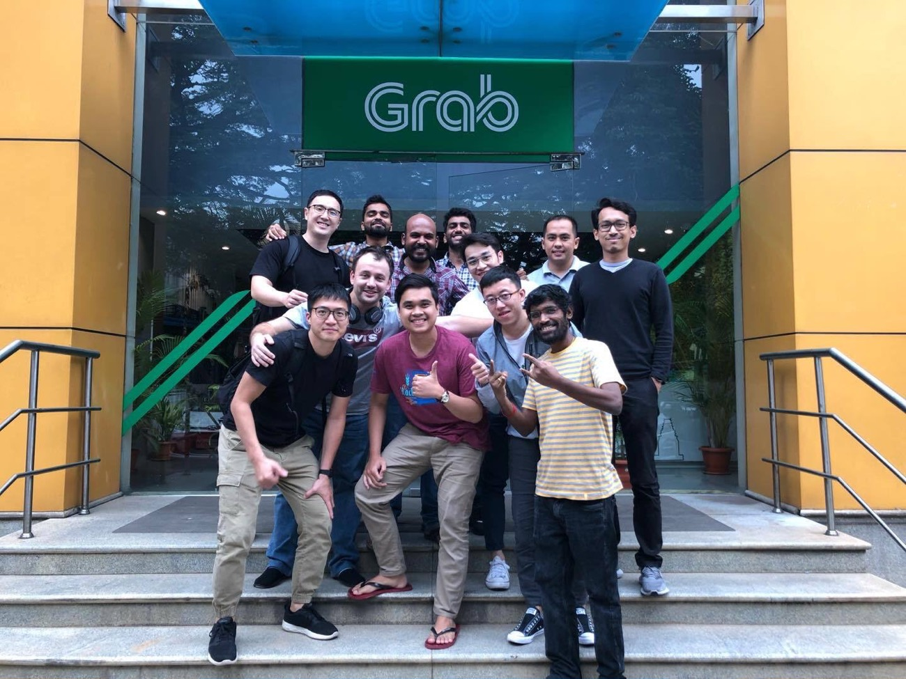
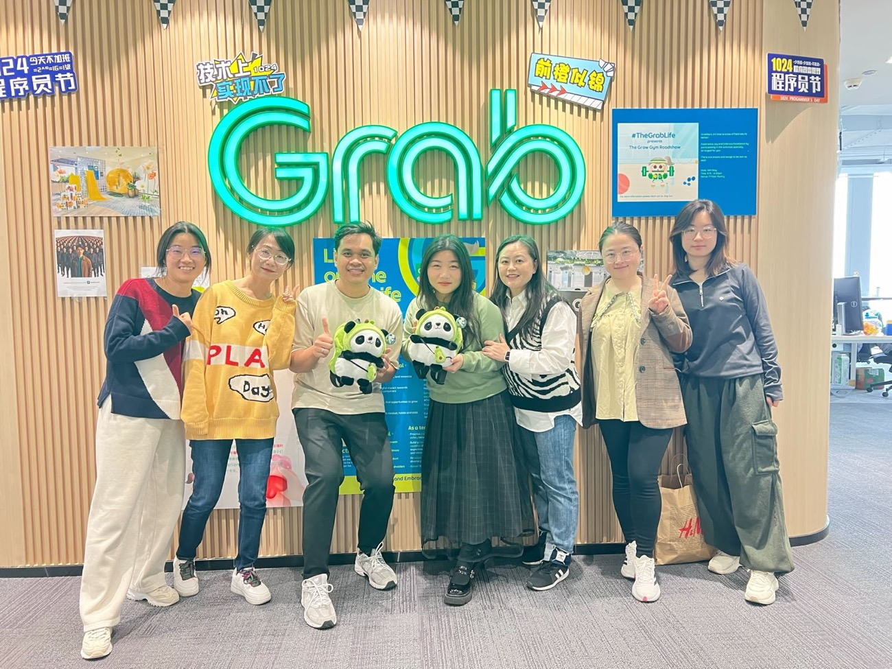
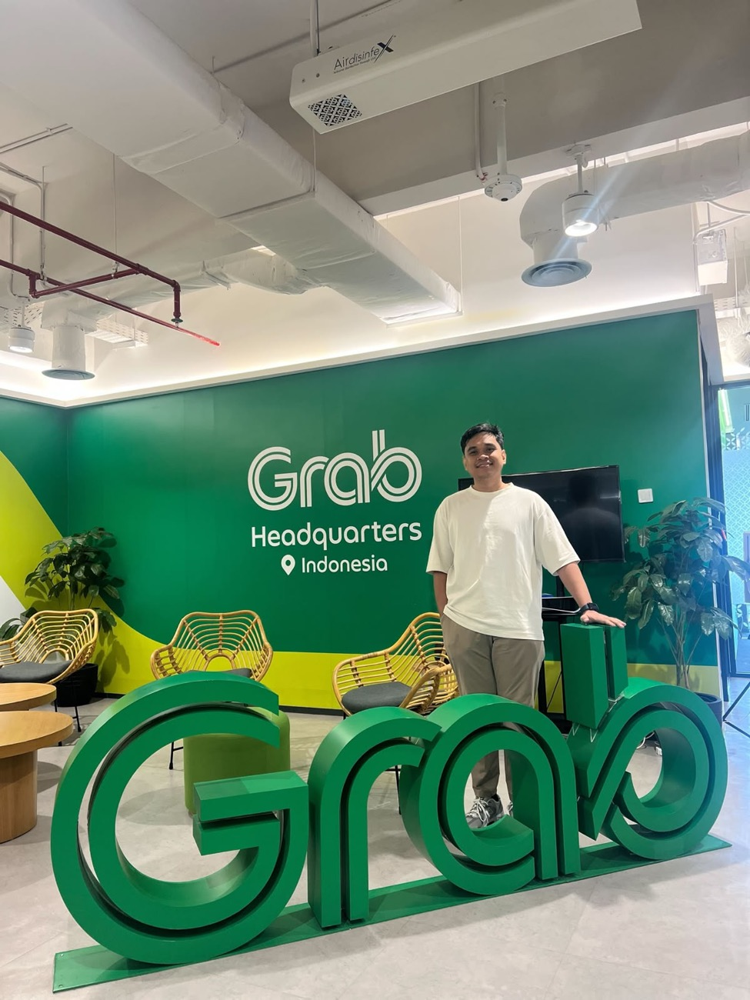
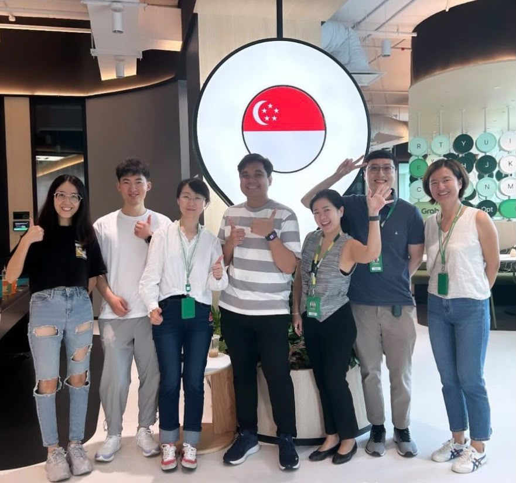
what we will cover
The plan for today
1
Apps and the city
How the phone became the front door, and where it fits in a digital city
2
How a feature gets built
Who builds one screen, and how it gets from idea to release
3
The tools
From planning to code, review and testing
4
After it ships
Why mistakes are slow to fix, and how we make apps better
5
AI in the daily job
Where it helps, where it stops, and why the basics still matter
6
Key takeaways
Six things to take home, and questions
hands up
Two questions
1
Who used Grab or an e-wallet this week?
2
Who used a government or city app this week?
What actually changed
Before
Now
Walk to the pangkalan, negotiate
Open an app, price already fixed
Carry cash everywhere
Pay from your phone
Queue at the shop
Order ahead
Call the seller
Chat inside the app
None of this needed new roads or new buildings. A few apps made daily things easier, and millions of people quietly changed their habits.
what a phone changed
The phone became the front door
getting around
Book a ride, find a route, buy a train or bus ticket, all from one screen
paying
Scan a code at a warung, a mall or a parking gate
eating & shopping
Order food, groceries and parcels without leaving home
city services
Report a problem, request a document, find public services - here in Makassar
none of these needed a new road. they needed an app.
the role of the app
The app is where the city meets people
- It reaches people. One tap, from the phone already in their hand
- It connects what is behind it. Payments, maps, city data and services
- It learns from use. What people tap, and what breaks, feeds back to the teams
the smarter the city, the more of it lives in an app.
Commuters
Shoppers
Residents
The mobile app
Shared rails: payments, maps, city data
Drivers
Warung & toko
City services
so, how does a feature like that actually get built?
Is it one person with a laptop?
Or how does it look inside a big tech company?
let’s zoom into one screen
Who built this screen?
One screen.
Many jobs.
An order screen in the Grab merchant app. Each of these is a real job, and they all meet here.
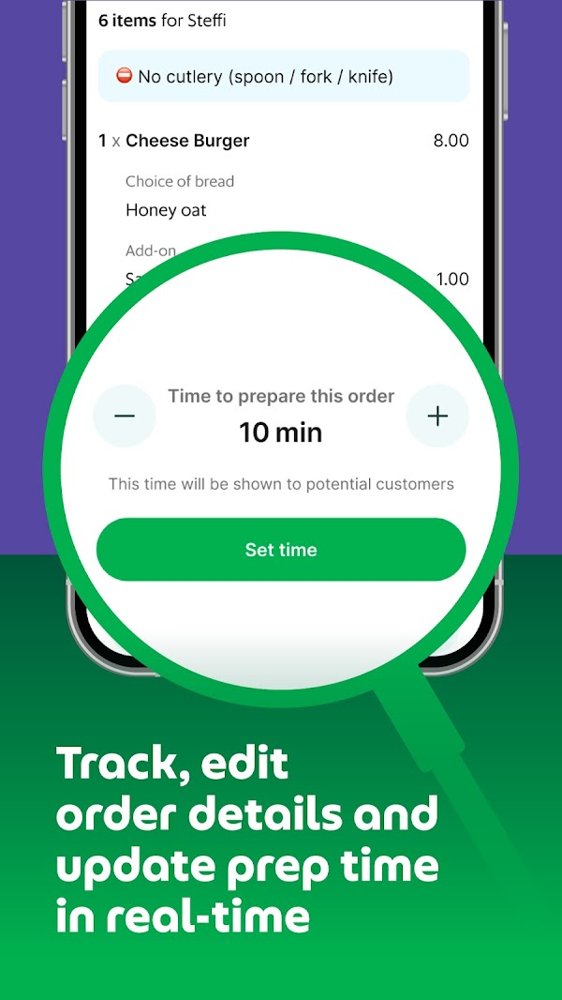
Product
decided merchants can set the prep time
Design
chose the plus and minus controls and the button
Engineering
Mobile
makes it work on the phone
Backend
stores the time, shows it to customers
QA
tried to break it first
tool 1 of 4: planning
Planning before writing code
- Product spec: what we build and why
- Engineering spec: how we will build it
- Jira tickets: the work broken into small tasks, so we can estimate the timeline and effort
a board like Jira
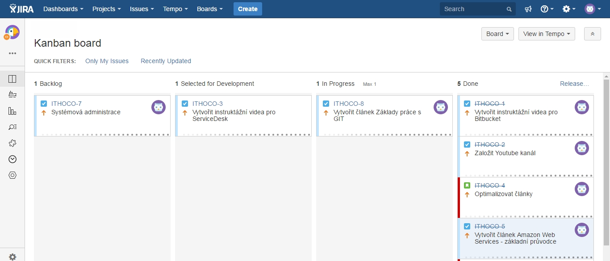
tool 2 of 4: writing code
Writing it, and seeing it
- An editor like Android Studio or Xcode
- The phone preview updates as you type
- Crash reports from real users can show up right inside the editor
Android Studio, with Xcode on iOS
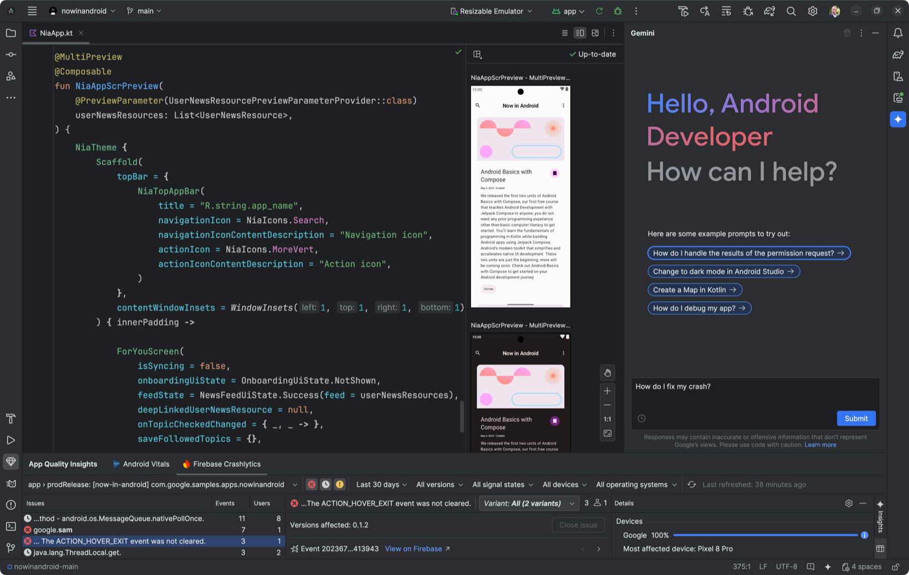
tool 3 of 4: merge requests
Code goes in through a merge request
- Every change is a merge request
- Teammates leave comments on specific lines
- Automated checks run too, then it can merge
GitLab merge requests
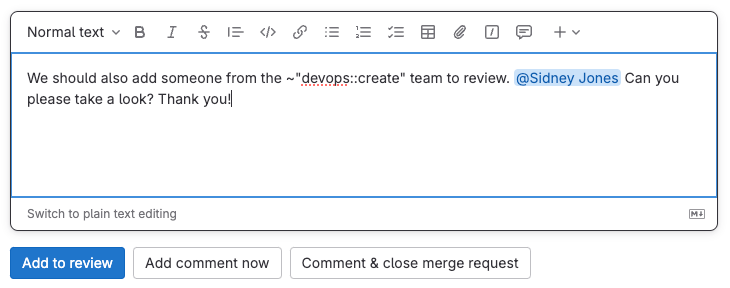
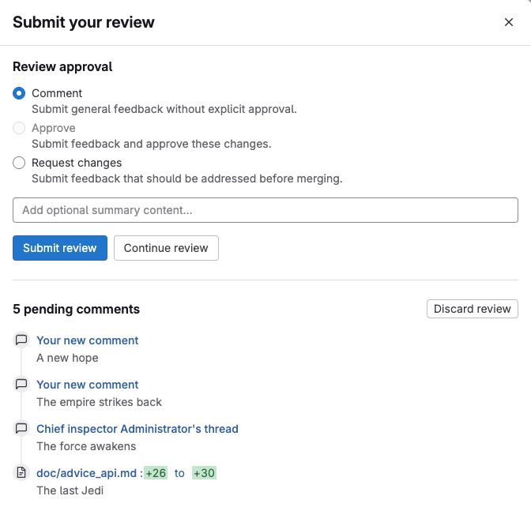
tool 4 of 4: testing
Testing before users do
- Unit tests check small pieces of code
- Automated UI tests tap through the app on emulators and real phones
- QA tries to break it, and beta testers try it first
automated checks, all green
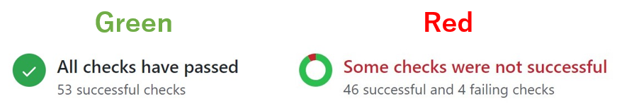
how releases usually go
The release train
Releases leave on a fixed schedule, say every two weeks. If your feature is ready and tested, it boards. If not, it waits for the next train.
not ready? wait for the next one
leaves on schedule
this release
next release
the one after
Shipping is the middle, not the end
idea
spec
you
write it
review
+ QA
release
train
1% of users
crashes?
is it used?
A/B test
fix or
remove
maintain
the part we practise
the part after
The work doesn’t end when the code works.
a mistake on mobile
You can’t fix it in five minutes
a website
bug found
fix it
deploy
fixed
a mobile app
bug found
fix + code review
review
build + upload
upload
store review
review
staged rollout
users update
adoption
everyone fixed
…and some people never update. old versions stay on their phones.
what that changes
So we ship with a way out
- Staged rollout. A small share of users first, then more, while we watch the crashes
- A switch. A feature can be turned off without waiting for a new release
- Careful code. If a payment went through but the reply never reached the phone, the app has to work out what really happened - without charging twice
Code that runs is not always code that’s
right.1%
10%
50%
everyone
kill switch
off without shipping anything new
the feature is live. it’s stable.
So, are we done?
plan
write
review
ship
watch
improve
Not quite. There’s one more job: make it better.
once it’s rolled out and stable
Next job: make it faster and steadier
Open fast
How long until you can use the app?
what we can do:
Start only what is needed
Profile it
Stay smooth
Stutters and freezes (“jank”) are felt right away
what we can do:
Find the bottleneck
Cache what repeats
Stay small
Download size, storage and battery add up
what we can do:
Use remote resources
Remove what is unused
a quick recap of the loop.
Plan, write, review, ship, watch, improve.
plan
write
review
ship
watch
improve
Now that we’re in the AI era, how does this change?
what the job looks like right now
The job in the AI era
Level 0
you drive
write everything
Level 1
cruise control
AI does small pieces
Level 2
autopilot
you and AI, all day
Level 3
you supervise
AI writes, you check
Level 4
back seat
you describe it, then check the result
Level 5
driverless
AI builds on its own, only a handful of teams
Level 0
you drive
I write every line myself. No AI.
Level 1
cruise control
AI helps with small pieces: finish this line, write this function.
Level 2
autopilot
AI and I work together all day. It writes a lot, and I keep steering.
Level 3
you supervise
AI writes the feature and I check it. I stay responsible for what gets merged.
Level 4
back seat
I describe what I want, AI builds it, and I check the result.
Level 5
driverless
AI builds and ships on its own. Very few teams are here.
our target
we’re still moving toward it
what level 3 looks like
Level 3: AI writes, I check
I stay in the loop. I decide what to build and I own what gets merged. The AI does a lot of the typing in between.
Spec
me
Jira tickets
me
Implement
AI
Review
AI, me and a teammate
Merge request
me
fix, then repeat
That’s the flow my team is moving toward, from spec to merge request.
a limit worth knowing
AI can run out too
- You can run out of tokens, and the tool just stops
- Often halfway through the task
- Then it’s back to what you understand yourself
good thing I know why it works.
Me: “one more prompt and it’s done”
AI: “you’ve hit your usage limit”
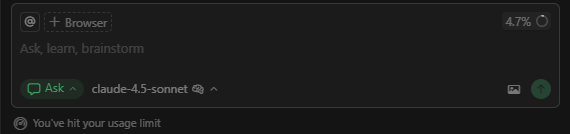
the fair question
If AI can write the code, why are you here for four years?
here’s how I think about it.
why four years, not four weeks
Why the fundamentals matter
What you learn
What it lets you do
What goes wrong without it
Data structures & complexity
Know why something is instant with 100 items and frozen with 100,000
Fast with 10 users, unusable with 10,000
Networks
Understand what really happens between the phone and the server
Works on wi-fi, falls apart when the signal drops in a lift
Databases
Know what you store, who can read it, and what happens when two people write at once
Users’ data sits in a database open to the world
Security basics
Recognise that secrets inside an app are public, and that login and permissions are not the same
The secret password sits inside the app, where anyone can read it
and three more
Why the fundamentals matter
What you learn
What it lets you do
What goes wrong without it
Operating systems & memory
Understand why the phone kills your app in the background and drains the battery
The app is killed in the background and loses everything
Software design
Structure a project so it can still change in six months, by someone who is not you
Every small change breaks something else, so nobody dares touch it
Testing & debugging
Prove it works, and find out why when it does not
Something breaks and you have no idea why
for students: use AI as a study buddy, not a shortcut.
AI knows how.
Knowing why is still on us.
AI can give you an answer in five seconds. Your job is to know whether it is right.
key takeaways, 1 of 2
What I hope you take home
1
Apps are how a city reaches people
A smart digital city lives in the phone in your hand, and real people build it.
2
The job is more than writing code
Plan, build, review, ship, watch, improve. Code is one part of it.
3
Shipping is the middle, not the end
Mistakes on mobile are slow to fix. When an app is the only way to report a broken streetlight, a bad release is a public service going down.
key takeaways, 2 of 2
And in the AI era
4
AI writes fast, you stay in the loop
You decide what to build, check what it gives you, and own what ships.
5
Use AI as a study buddy
Ask it why, and test yourself. Let it help you learn, not skip the learning.
6
That gap is yours to close
Remember the two questions at the start? Start small, with a problem you have.
Terima kasih
questions?
Muh Rahmatullah
linkedin.com/in/muhrahmatullah